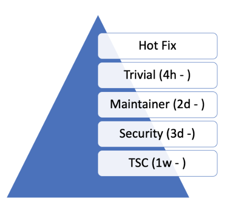

开发环境与工具
代码审查
GitHub 旨在提供一个框架，使每个提交在被纳入代码库之前都经过审查。变更以 PR（拉取请求）的形式上传到 GitHub，但在经过审查、通过一系列检查（CI）并获得维护者批准之前，并不会真正成为项目的一部分。GitHub 用于支持标准的开源实践：提交补丁，由项目成员审查后再应用到代码库。
PR 应正确 添加标签，并关联到所有相关的 缺陷或功能跟踪 issue。
Zephyr 项目使用 GitHub 进行代码审查和 Git 代码树管理。开发者向任何 Zephyr 组件提交变更或改进时，都应使用 GitHub。GitHub Actions 会按照 Zephyr 项目仓库中随代码树一起存放的 MAINTAINERS.yml 文件中的定义，按组件自动指派负责的审查者。审查完成后，只有少数发布经理有权将 PR 合并到 main 分支。
在代码合并前给审查者留出审查时间
Zephyr 项目是一个全球性项目，不局限于某个特定地区或时区，我们的开发者和贡献者来自世界各地。通过 PR 提出变更时，我们需要留出最短审查时间，让开发者和贡献者有机会审查变更并发表意见。变更分为不同的类别，我们知道有些变更确实需要由相关领域专家和被修改子系统的所有者进行审查。许多变更属于“琐碎”类别，通过一般性审查即可处理，不需要排队等待维护者或代码所有者审查。此外，有些变更可能需要进一步讨论，并由 TSC 或安全工作组做出决定。综上所述，下图给出了每个类别的最短审查时间建议：

工作流程
变更的作者可以在其 PR 中建议该变更应属于哪个类别。负责监控变更流入的项目维护者或 TSC 成员可以更改 PR 的标签，并添加评论说明该变更为何应属于另一个类别。
项目将使用标签系统对 PR 进行分类。
在最短时间届满之前，不应合并变更。
类别/标签
- Hotfix（紧急修复）
修复阻碍开发者日常工作的问题的任何变更，例如 CI 故障、测试故障，以及影响用户体验的小型文档修复。
此类修复在通过 CI 检查后可以随时合并。视修复内容、严重程度以及是否有（作者以外的）人员可以审查而定，在给出理由的情况下，可以不经项目所有者审查即合并。
- Trivial（琐碎）
琐碎变更是指那些足够显而易见、不需要维护者或代码所有者参与的变更。此类变更不应改变子系统或组件的逻辑或设计。例如，琐碎变更可以是：
文档变更
配置变更
构建系统的小幅调整
不改变逻辑的代码逻辑小幅优化
测试的变更和修复
为支持更多配置或开发板等而修改示例
- Maintainer（维护者）
任何触及子系统或组件逻辑或原始设计的变更，都需要由代码所有者或指定的子系统维护者进行审查。如果代码变更由所有者以外的贡献者或开发者发起，则需要将 PR 指派给代码所有者，由其向作者提供反馈并请其他开发者进一步审查，从而推动 PR 达到可合并状态。
- Security（安全）
看起来会影响系统整体安全性的变更，需要由安全工作组的安全专家进行审查。
- TSC 与工作组
引入新特性或新功能、或改变整个系统工作方式的变更，需要由 TSC 或负责的工作组审查。例如，对于 破坏性 API 变更，需要在架构会议上介绍该提案，让相关利益方了解该变更。
PR 应有指派人
PR 的指派人不应与 PR 的作者是同一人
PR 的指派人负责推动 PR 达到可合并状态
指派人负责驳回过时的审查意见，并向其他开发者和贡献者征求审查
未经指派人批准，不应合并 PR。
审查者不得在没有评论或理由的情况下“Request Changes”（要求修改）
对 PR 提出的任何修改请求（-1）都必须给出理由。审查者应避免在没有理由的情况下阻止 PR。如果审查者认为某个变更不应在未经其审查的情况下合并，则应：请求更改类别，例如：
Trivial -> Maintainer
将 PR 指派给自己，这意味着未经你批准不应合并该 PR。
PR 在合并之前应至少获得 2 个批准
PR 只有在获得两个肯定的审查（批准）后才能合并。除执行合并的人（合并 != 批准）之外，还需要另外两个批准才能合并 PR。执行合并的人可以不批准直接合并，也可以先批准再合并，以凑足所需的 2 个批准。
审查者应跟踪自己已提供反馈的 PR
如果审查者在 PR 中提出了修改请求，他或她应关注该 PR 的状态，和/或回应提及（mention）请求，以确认其反馈是否已得到处理。否则，指派人或仓库所有者应驳回其否定审查。审查将按以下标准驳回：
作者已明显处理了反馈或疑虑
作者多次提醒（ping）后，审查者在 2 周内没有再次查看该 PR
审查意见与代码变更无关，或要求进行没有正当理由的结构性修改，例如：
拆分 PR
能否修复恰好出现在 diff 中的这段无关代码
能否修复无关的问题
等等。
关闭过时的 issue 和 PR
GitHub 上的 PR 和 issue 版块 不是 讨论论坛，它们是我们需要执行并推动至关闭的事项。讨论请使用邮件列表。
无论是 issue 还是 PR，原发布者都需要回答问题，并就问题或变更提供澄清。如果请求在一周内没有得到回复，将再次尝试联系贡献者以获得回复。如果再过一周仍无回复，该事项可能会被关闭（草稿 PR 以及带有 DNM 标签的 PR 除外）。
持续集成
所有提交到 GitHub 的变更都要在模拟的平台和架构上运行测试，以发现可立即识别的故障和回归。使用 Twister 进行的测试还会对所有开发板和平台执行构建测试。文档变更同样会通过审查和构建测试进行验证，以确认文档能够成功生成。
CI 测试运行期间发现的任何失败，都会导致 CI 系统自动给出否定审查。开发者应修复问题、重新修改补丁并再次提交。
CI 基础设施目前运行以下测试：
运行
checkpatch检查代码风格问题（出错时可投 -1 票；见注释）Gitlint：根据项目要求检查 Git 提交风格
许可证检查：检查是否存在冲突的许可证
运行
twister脚本在 QEMU 中运行内核测试（出错时可投 -1 票）
为不同的开发板构建各种示例（出错时可投 -1 票）
验证文档能否正确构建。
备注
checkpatch 是一个 Perl 脚本，它使用正则表达式来提取那些需要 C 语言解析器才能准确处理的信息，因此有时会误报。已知的情况包括如下结构：
static uint8_t __aligned(PAGE_SIZE) page_pool[PAGE_SIZE * POOL_PAGES]; IOPCTL_Type *base = config->base;
这两行都会产生关于 * 运算符两侧空格的诊断信息：第一行被误认为是指针类型声明，按此应写作 PAGE_SIZE *POOL_PAGES；而第二行被误认为是乘法表达式，按此应写作 IOPCTL_Type * base。
在 CI 基础设施给出错误结果的情况下，维护者可以推翻 -1 票。
在 GitHub 中为 issue 和 PR 添加标签
项目使用 GitHub issue 和 PR 来跟踪和管理 Zephyr 项目的日常工作、长期工作和贡献。我们使用 GitHub 标签 按领域、类型、优先级等对这些 issue 和 PR 进行分类和组织，便于查找和报告相关事项。
所有 GitHub issue 或 PR 都必须正确添加标签。issue 和 PR 通常会被添加多个标签，以便在不同的可用类别中对其分类。审查 PR 时，如果发现标签缺失或不正确，维护者应予以修正。
这样可以节省大家搜索的时间，降低 PR 或 issue 被遗忘的可能性，加快审查速度，避免重复的问题报告等。
以下是我们目前使用的标签，按适用范围分组：
仅适用于 issue 的标签
标签 |
描述 |
|---|---|
priority: {high|medium|low} |
用于划分缺陷的影响程度和重要性。 注意：issue 的优先级通常在缺陷分类会议或 TSC 会议上设置或更改。 |
Regression |
以前能正常工作、但现在不再正常工作的情况（缺陷的子类型）。 |
Duplicate |
该 issue 与另一个 issue 重复（请注明）。 |
Good first issue |
适合首次贡献者处理。 |
Release Notes |
需要作为已知问题在发布说明中提及并附带补充信息的 issue。 |
仅适用于 PR 的标签
该 issue 或 PR 描述了对稳定 API 的变更。
标签 |
描述 |
|---|---|
Hotfix |
修复阻碍开发的问题。 |
Trivial |
可以缩短审查时间、任何人都可以审查的简单变更，例如拼写错误、简单直接的单行缺陷修复等。 |
Maintainer |
需要维护者审查。 |
Security Review |
需要由安全专家审查。 |
DNM |
该 PR 不应合并（Do Not Merge）。对于仍在进行中的工作，建议使用 GitHub 的“草稿”（draft）PR。 |
Needs review |
该 PR 需要维护者关注。 |
Backport |
该 PR 是向后移植（backport）PR，或者应被向后移植。 |
Licensing |
该 PR 存在许可问题，需要许可专家审查。 |
备注
对于所有适用于 PR 的标签，请注意：标签与 PR 的复杂程度一起，决定了合并前应等待多长时间以确保充分审查。详情请参阅 审查流程。
同时适用于 PR 和 issue 的标签
标签 |
描述 |
|---|---|
area: {area-name} |
表示受该缺陷或 PR 影响的 Zephyr 子系统（例如 area: Kernel、area: I2C、area: Memory Management）、项目职能（例如 area: Debugging、area: Documentation、area: Process）或其他类别（例如 area: Coding Style、area: MISRA-C）。 领域维护者应能够按领域标签进行筛选，找到与该领域相关的所有 issue 和 PR。 |
platform: {platform-name} |
仅影响特定平台的 issue 或 PR。 |
TSC |
TSC 是技术指导委员会（Technical Steering Committee）的缩写。如果时间允许，该 issue 将在下一次 TSC meeting 上讨论。 |
Breaking API Change |
该 issue 或 PR 描述了对稳定 API 的破坏性变更。更多信息请参阅 引入破坏性的 API 变更。 |
bug |
该 issue 是一个缺陷，或者该 PR 用于修复缺陷。 |
Coverity |
Coverity 检测到的问题或其修复。 |
Waiting for response |
Zephyr 开发者正在等待提交者回答问题或处理某个问题。 |
Blocked |
被另一个 PR 或 issue 阻塞。 |
Stale |
看起来已被放弃、需要作者关注的 issue 或 PR。 |
In progress |
对于 PR：工作仍在进行中，暂时不应合并。对于 issue：正在处理中。 |
RFC |
作者希望听取社区的意见。对于 PR，应视为草稿。 |
LTS |
与长期支持版本分支相关。 |
EXT |
与外部组件相关。 |